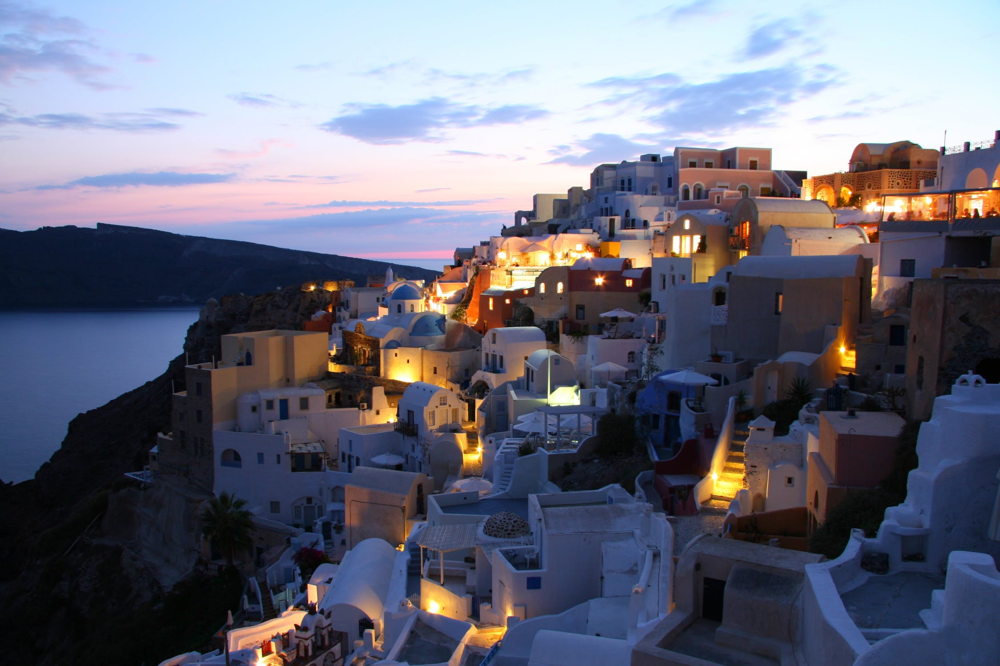
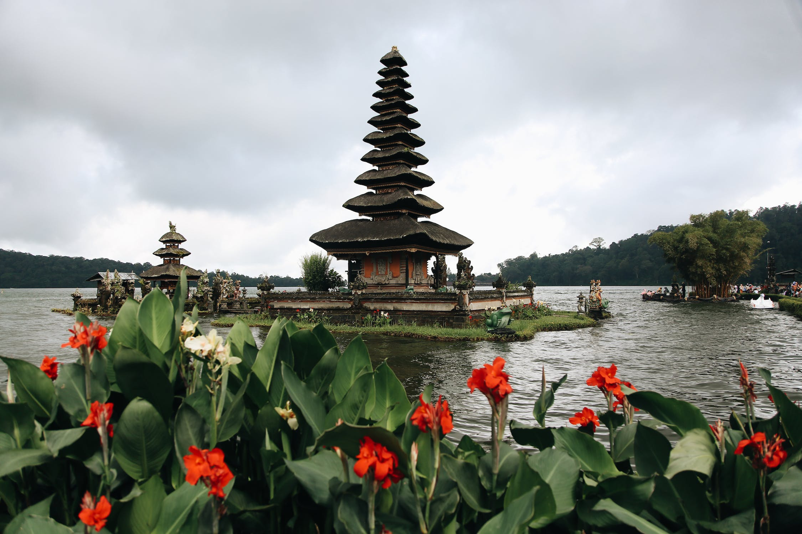
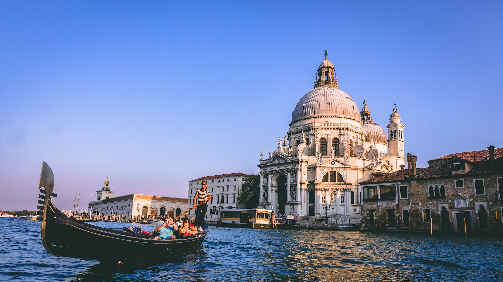
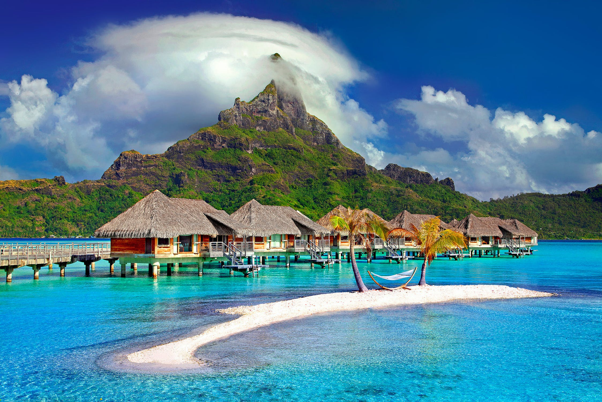
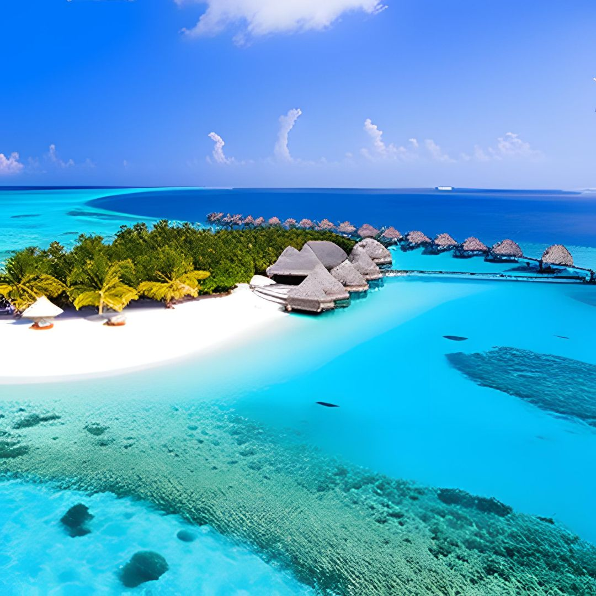
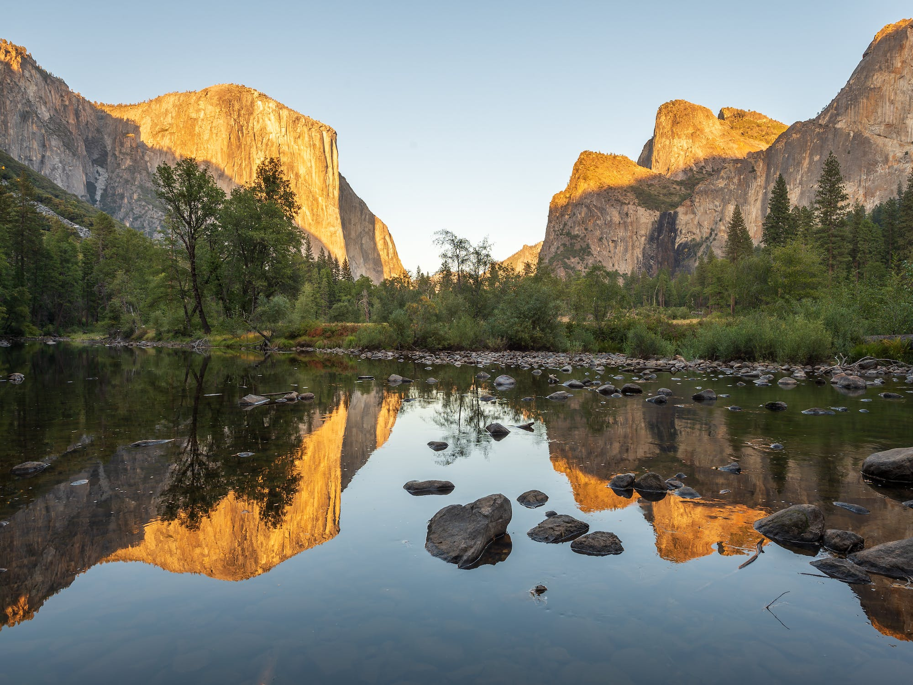

Top 10 most beautiful places to travel around the world
Traveling, oh what an enriching expedition it is! The sheer breadth of experiences, from immersing oneself in new cultures to savoring exotic gastronomy, presents an abundant tapestry of personal growth and enlightenment. And what could be more splendid than embarking on a voyage to the most resplendent corners of our planet? Brace yourself for an unveiling of the top 10 most extraordinary destinations that will leave you awe-struck:
1. Santorini, Greece
Prepare to have your senses awakened as you set foot on the mesmerizing island of Santorini, nestled amidst the Aegean Sea. A spectacle beyond words, Santorini will bewitch you with its strikingly pure white edifices, enchanting blue-domed churches, and sunsets that paint the heavens in a breathtaking palette. With crystalline waters and ebony-hued beaches, it comes as no surprise that Santorini beckons honeymooners and couples seeking a transcendent romantic escapade.
2. Bali, Indonesia
Step foot onto the fabled Island of the Gods, none other than Bali, a celestial paradise that evokes sheer wonderment. Amidst its emerald rice fields that sprawl like an artist's canvas, Bali reveals its resplendent beaches and ancient temples steeped in mysticism. Whether you yearn for tranquil repose by the shore or an expedition delving into the island's historical tapestry, Bali promises an enchantment to satiate every longing.
3. Venice, Italy
Prepare to be ensnared in the clutches of ethereal romance as you wander through the labyrinthine waterways of Venice, a city steeped in captivating allure. Here, meandering canals weave tales of yore, graceful bridges invite whispered secrets, and the kaleidoscope of facades exudes a vivacity that can only be described as magical. Glide along the water's edge in a gondola or unravel the mysteries of Venice's iconic landmarks; this city demands a place on every traveler's itinerary.
4. Petra, Jordan
Behold the splendor of Petra, an ancient metropolis hewn from the very rocks by the masterful hands of the Nabataeans. This archaeological marvel stands as a testament to the awe-inspiring prowess of human ingenuity and artistic flair. With resplendent temples, majestic tombs, and grand amphitheaters, Petra unveils an ancient civilization frozen in time, inviting visitors to immerse themselves in a world of historical brilliance.

5. Bora Bora, French Polynesia
Prepare for a journey to paradise itself as you set foot upon the shores of Bora Bora, a celestial haven that transcends the bounds of imagination. With crystal-clear waters caressing pristine coral reefs and verdant peaks that rise majestically, this is a utopia realized. Immerse yourself in the depths of vibrant marine life through snorkeling and scuba diving, embark on awe-inspiring hikes, or simply bask in the warm feeling of the tropical sun—Bora Bora is a vision of heavenly bliss.
6. Banff National Park, Canada
Nestled amidst the heart of the Canadian Rockies lies the awe-inspiring wilderness of Banff National Park. A tableau of snow-capped peaks, glaciers that glisten like diamonds, and lakes that shimmer in hues of turquoise, this pristine sanctuary is a siren's call to adventurers and nature enthusiasts. Whether traversing rugged trails, carving through powdery slopes, or surrendering to the sheer beauty that envelops you, Banff is an oasis for those who seek communion with the great outdoors.

7. Machu Picchu, Peru
Prepare for an encounter with awe as you ascend to the lofty heights of Machu Picchu, an ancient Incan citadel nestled amidst the ethereal embrace of the Andes Mountains. Majestic vistas unfold before your very eyes, revealing an archeological marvel steeped in historical grandeur. From breathtaking panoramas that stir the soul to tales of an enigmatic civilization, Machu Picchu stands as a pilgrimage site for every intrepid traveler.

8. The Great Barrier Reef, Australia
Immerse yourself in the wondrous embrace of one of nature's greatest marvels—the Great Barrier Reef. Home to an astounding array of marine life and resplendent coral gardens, this underwater kingdom beckons snorkelers and divers alike to explore its iridescent depths. A mecca for nature enthusiasts, the Great Barrier Reef is an invitation to witness the intricate beauty and fragile harmony that thrives beneath the azure waves.

9. The Maldives
Indulge in the epitome of tropical opulence as you set foot upon the turquoise shores of the Maldives. A dreamscape where crystalline waters caress pristine beaches, and luxury resorts cater to your every whim. Whether surrendering to blissful repose upon the sun-kissed sands or embarking on an odyssey of cultural immersion, the Maldives stands as a testament to paradise perfected.
10. Yosemite National Park, United States
In the heart of California's Sierra Nevada Mountains lies the majestic expanse of Yosemite National Park. A realm of cascading waterfalls that plunge into abyssal depths, ancient sequoia trees that reach for the heavens, and granite cliffs that command reverence. Yosemite beckons all who yearn for communion with nature's splendor—hikers, campers, and those seeking to lose themselves in the grandeur of their surroundings.
In conclusion, venturing into the embrace of these extraordinary destinations promises a transformative experience. Whether your heart yearns for sun-soaked shores, the echoes of ancient civilizations, or the embrace of nature's magnificence, these top 10 destinations stand as gateways to enchantment. The time to embark on your next odyssey is now. Let the dreams of exploration guide your path.